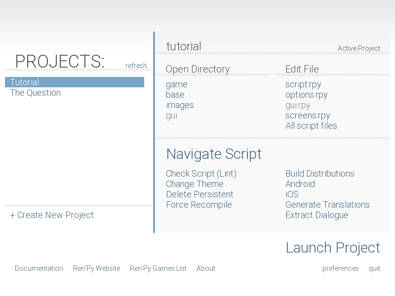
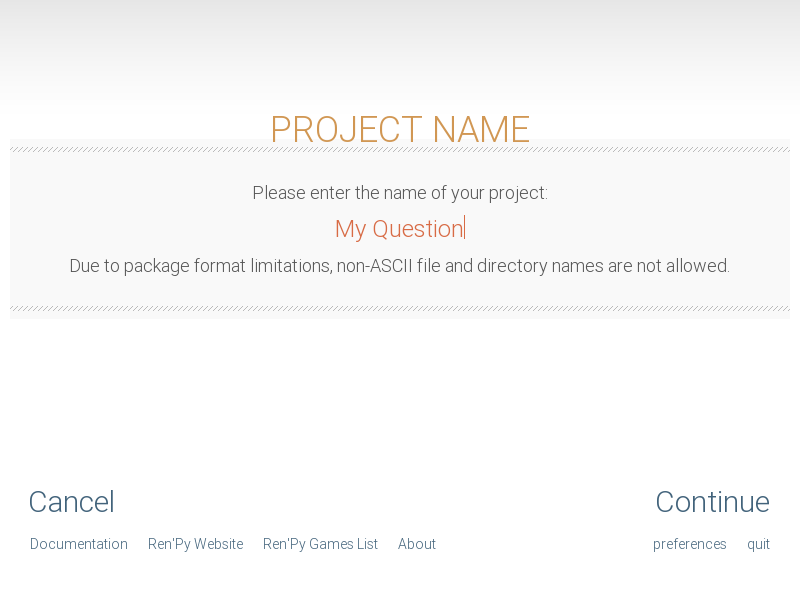
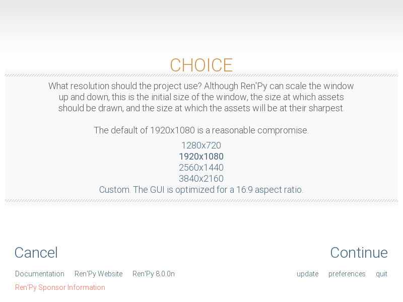
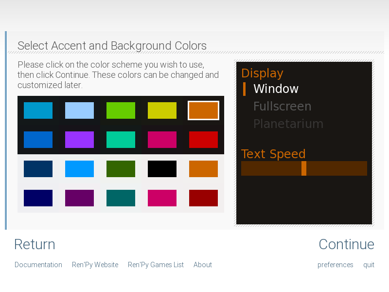

Быстрый старт
Добро пожаловать в руководство по быстрому старту Ren'Py. Цель этого руководства — продемонстрировать, как вы можете создать игру на Ren'Py с нуля за несколько простых шагов. Мы сделаем это, показав, как создать простую игру, The Question.
Лаунчер Ren'Py
Прежде чем вы приступите к созданию игры, вам следует уделить немного времени изучению того, как работает лаунчер Ren'Py. Лаунчер позволяет вам создавать, управлять, редактировать и запускать проекты Ren'Py.
Начало работы. Для начала вам потребуется скачать Ren'Py.
После того как вы скачали Ren'Py, его нужно будет извлечь и запустить.
В Windows дважды щёлкните по скачанному исполняемому файлу. Он извлечёт Ren'Py в папку с именем
renpy-<version>. Вы можете перейти в эту папку и запуститьrenpy.exe. (Может отображаться какrenpy, если расширения файлов скрыты.)В Mac OS X дважды щёлкните по скачанному образу диска, чтобы смонтировать его как диск. Когда диск откроется, скопируйте папку с именем
renpy-<version>в другое место. (Куда — не имеет значения, но её нужно переместить из образа диска, доступного только для чтения. Не перемещайте приложение renpy из папки, в которой оно находится, — в другом месте оно работать не будет.) Затем перейдите в неё и запустите приложениеrenpy.В Linux распакуйте tar-архив, перейдите в директорию
renpy-<version>и затем запуститеrenpy.sh.
После этого должен запуститься лаунчер Ren'Py.
Лаунчер Ren'Py переведён на несколько языков. Чтобы сменить язык, выберите «preferences» в правом нижнем углу, а затем выберите язык.
Выбор и запуск проекта. Для начала вам стоит посмотреть, как выглядит готовая игра The Question. Для этого запустите лаунчер Ren'Py и на первом экране выберите «The Question». Нажмите «Launch Project», чтобы запустить The Question.
Вы можете вернуться к демо-игре Ren'Py, сделав то же самое, но выбрав «Tutorial» вместо «The Question».
{kind=link}

Главный экран лаунчера Ren'Py.
{kind=link}

Присвоение имени новому проекту.
{kind=link}

Выбор разрешения проекта.
{kind=link}

Выбор акцентного и фонового цветов для темы по умолчанию.
Создание нового проекта. Создайте новый проект, выбрав в лаунчере «Create New Project».
Если вы создаёте проект впервые, Ren'Py может попросить вас выбрать директорию проектов. Это директория (также называемая папкой), где создаются новые проекты и которая сканируется на наличие существующих. Окно выбора директории может появиться под окном Ren'Py, так что не забудьте поискать его там.
Затем лаунчер попросит вас ввести имя проекта. Поскольку «The Question» уже занято, введите что-нибудь другое, например, «My Question», и нажмите Enter.
После этого лаунчер попросит вас выбрать разрешение проекта. 1280x720 — это хороший компромисс между размером игры и качеством изображений. Для целей этого руководства мы выберем 1280x720, чтобы соответствовать арту игры «The Question», а затем нажмём «Continue».
Затем лаунчер попросит вас выбрать цветовую схему — акцентный и фоновый цвета для нового GUI. На данном этапе неважно, что вы выберете, так что просто выберите то, что вам нравится, и нажмите «Continue».
После этого Ren'Py немного подумает и выдаст простой шаблон игры. В шаблоне используются заглушки для арта и текста, но он является запускаемым и поддерживает ожидаемые функции, такие как откат, загрузка и сохранение. Выберите «Launch Project», чтобы запустить его.
Простая игра
label start:
"Sylvie" "Hi there! How was class?"
"Me" "Good..."
"I can't bring myself to admit that it all went in one ear and out the other."
"Me" "Are you going home now? Wanna walk back with me?"
"Sylvie" "Sure!"
Это очень простая игра на Ren'Py. В ней нет ни картинок, ни музыки, но она показывает диалог между двумя персонажами и строку повествования.
Чтобы попробовать, на главном экране лаунчера выберите проект «My Question», а затем в разделе «Edit File» выберите «script.rpy». Если вы делаете это в первый раз, Ren'Py попросит вас выбрать редактор. Мы рекомендуем Visual Studio Code для начинающих разработчиков — помимо того, что это надёжный выбор, лаунчер также может скачать его для вас. Затем он откроет файл сценария в редакторе.
Когда редактор откроется, сотрите всё в файле script.rpy. Мы начинаем
с нуля, так что то, что там есть, вам не понадобится. Скопируйте пример выше в
script.rpy и сохраните его.
Теперь вы готовы запустить этот пример. Вернитесь в лаунчер и выберите «Launch Project». Ren'Py запустится. Обратите внимание, что без каких-либо дополнительных усилий Ren'Py предоставил вам меню, которые позволяют загружать и сохранять игру, а также изменять различные настройки. Когда будете готовы, нажмите «Launch Project» и пройдите этот пример игры.
Этот пример показывает некоторые из наиболее часто используемых инструкций Ren'Py.
Первая строка — это инструкция label. Инструкция
label используется для присвоения имени определённому месту в программе. В данном случае,
мы создаём метку с именем start. Метка start является особенной, так как
именно с неё начинается выполнение скриптов Ren'Py, когда пользователь нажимает «Start Game»
в главном меню.
Остальные строки — это инструкции say. Существует две формы инструкции say. Первая — это строка (начинающаяся с двойных кавычек, содержащая символы и заканчивающаяся двойными кавычками) на отдельной строке, которая используется для повествования и мыслей главного героя. Вторая форма состоит из двух строк. Она используется для диалога, где первая строка — это имя персонажа, а вторая — то, что этот персонаж говорит.
Обратите внимание, что все инструкции say имеют отступ в четыре пробела. Это потому, что они являются блоком под инструкцией label. В Ren'Py, блоки должны иметь отступ относительно предыдущей инструкции, и все инструкции в блоке должны иметь одинаковый отступ.
Когда строки содержат кавычки, этим символам должен предшествовать обратный слэш. Например:
"Sylvie" "Did you ever hear Lincon's famous saying, \"The problem with Internet quotations is that many of them are not genuine.\""
Хотя эта простая игра и не представляет собой ничего особенного, она является примером того, как легко заставить что-то работать в Ren'Py. Мы добавим изображения чуть позже, но сначала давайте посмотрим, как определять персонажей.
Персонажи
Основная статья: Определение объектов Character
Одна из проблем первого примера заключается в том, что он требует от вас повторно вводить имя персонажа каждый раз, когда он говорит. В игре с большим количеством диалогов это может потребовать много печати. Кроме того, имена обоих персонажей отображаются одинаково, акцентным цветом, выбранным при запуске игры. Чтобы исправить это, Ren'Py позволяет вам определять персонажей заранее. Это позволяет связать короткое имя с персонажем и изменить цвет имени персонажа.
define s = Character('Sylvie', color="#c8ffc8")
define m = Character('Me', color="#c8c8ff")
label start:
s "Hi there! How was class?"
m "Good..."
"I can't bring myself to admit that it all went in one ear and out the other."
s "Are you going home now? Wanna walk back with me?"
m "Sure!"
Первая и вторая строки определяют персонажей. Первая строка определяет персонажа с коротким именем «s», полным именем «Sylvie», причём имя отображается зеленоватым цветом. (Цвета представляют собой шестнадцатеричные триплеты red-green-blue, используемые на веб-страницах.)
Вторая строка создаёт персонажа с коротким именем «m», полным именем «Me», причём имя отображается синеватым цветом. Других персонажей можно определить, скопировав одну из строк определения персонажа и изменив короткое имя, полное имя и цвет.
Мы также изменили инструкции say так, чтобы они использовали объекты персонажей вместо строки с именем персонажа. Это указывает Ren'Py использовать определённых нами персонажей.
Изображения
Основная статья: Отображение изображений
Визуальная новелла не была бы визуальной новеллой без изображений. Вот ещё одна сцена из «The Question». Она также включает инструкции, которые показывают изображения игроку. Этот фрагмент может полностью заменить предыдущий раздел скрипта, если вы хотите его опробовать.
define s = Character('Sylvie', color="#c8ffc8")
define m = Character('Me', color="#c8c8ff")
label start:
scene bg meadow
"After a short while, we reach the meadows just outside the neighborhood where we both live."
"It's a scenic view I've grown used to. Autumn is especially beautiful here."
"When we were children, we played in these meadows a lot, so they're full of memories."
m "Hey... Umm..."
show sylvie green smile
"She turns to me and smiles. She looks so welcoming that I feel my nervousness melt away."
"I'll ask her...!"
m "Ummm... Will you..."
m "Will you be my artist for a visual novel?"
show sylvie green surprised
"Silence."
Этот фрагмент скрипта вводит две новые инструкции. Инструкция scene в
строке 6 очищает все изображения и отображает фоновое изображение. Инструкции show
в строках 16 и 26 отображают спрайт поверх фона и меняют
отображаемый спрайт, соответственно.
В Ren'Py у каждого изображения есть имя. Имя состоит из тега и, опционально, одного или нескольких атрибутов. И тег, и атрибуты должны начинаться с буквы и содержать только буквы, цифры и символы подчёркивания. Например:
В инструкции scene в строке 6, тег — «bg», а атрибут — «meadow». По соглашению, фоновые изображения должны использовать тег bg.
В первой инструкции show в строке 16, тег — «sylvie», а атрибуты — «green» и «smile».
Во второй инструкции show в строке 26, тег — «sylvie», а атрибуты — «green» и «surprised».
Одновременно может отображаться только одно изображение с определённым тегом. Когда показывается второе изображение с тем же тегом, оно заменяет первое, как это происходит в строке 26.
Ren'Py ищет файлы изображений в директории images, которую можно найти, выбрав «images» в разделе «Open Directory» лаунчера. Ren'Py ожидает, что арт персонажей будет в файлах PNG, WEBP или AVIF, а фоновый арт — в файлах JPG, JPEG, PNG, WEBP или AVIF. Файлы SVG также поддерживаются, но в основном используются для настройки интерфейса. Имя файла очень важно — расширение удаляется, имя файла приводится к нижнему регистру, и результат используется в качестве имени изображения.
Например, следующие файлы, помещённые в директорию images, определяют следующие изображения.
«bg meadow.jpg» ->
bg meadow«sylvie green smile.png» ->
sylvie green smile«sylvie green surprised.png» ->
sylvie green surprised
Поскольку имена файлов приводятся к нижнему регистру, следующее также верно.
«Sylvie Green Surprised.png» ->
sylvie green surprised
Изображения можно размещать в поддиректориях (подпапках) внутри директории images. Имя директории игнорируется, и для определения имени изображения используется только имя файла.
Инструкция Hide.
Ren'Py также поддерживает инструкцию hide, которая скрывает указанное изображение.
label leaving:
s "I'll get right on it!"
hide sylvie
"..."
m "That wasn't what I meant!"
На самом деле, вам довольно редко придётся использовать hide. Show можно использовать, когда персонаж меняет эмоции, а scene — когда все уходят. Использовать hide нужно только тогда, когда персонаж уходит, а сцена остаётся прежней.
Инструкция Image.
Иногда разработчик может не захотеть, чтобы Ren'Py определял изображения
автоматически. Для этого и предназначена инструкция image. Она должна
находиться на верхнем уровне файла (без отступов и перед label start)
и может использоваться для сопоставления имени изображения с файлом изображения. Например:
image logo = "renpy logo.png"
image eileen happy = "eileen_happy_blue_dress.png"
Инструкция image выполняется во время инициализации (init time), перед label start и остальной частью игрового скрипта, который взаимодействует с игроком.
Инструкция image также может использоваться для более сложных задач, но это обсуждается в другом месте.
Переходы
Основная статья: Переходы
В приведённом выше скрипте изображения появляются и исчезают мгновенно. Поскольку смена локации или появление/уход персонажа со сцены являются важными событиями, Ren'Py поддерживает переходы, которые позволяют эффектам применяться при изменении того, что отображается на экране.
Переходы изменяют то, что отображается, с того, что было в конце последнего взаимодействия (диалог, меню или переход — среди прочих инструкций), на то, как это выглядит после выполнения инструкций scene, show и hide.
label start:
scene bg meadow
with fade
"After a short while, we reach the meadows just outside the neighborhood where we both live."
"It's a scenic view I've grown used to. Autumn is especially beautiful here."
"When we were children, we played in these meadows a lot, so they're full of memories."
m "Hey... Umm..."
show sylvie green smile
with dissolve
"She turns to me and smiles. She looks so welcoming that I feel my nervousness melt away."
"I'll ask her...!"
m "Ummm... Will you..."
m "Will you be my artist for a visual novel?"
Инструкция with принимает имя перехода для использования. Самый
распространённый — это dissolve, который плавно переходит от одного экрана
к другому. Другой полезный переход — fade, который затемняет
экран до чёрного, а затем проявляет новый экран.
Когда переход размещается после нескольких инструкций scene, show или hide, он применяется ко всем ним одновременно. Если бы вы написали:
scene bg meadow
show sylvie green smile
with dissolve
Изображения «bg meadow» и «sylvie green smile» появились бы плавно одновременно. Чтобы они появлялись по одному, вам нужно написать две инструкции with:
scene bg meadow
with dissolve
show sylvie green smile
with dissolve
Сначала плавно появляется луг, а затем плавно появляется Сильви. Если бы вы хотели мгновенно показать луг, а затем показать Сильви, вы могли бы написать:
scene bg meadow
with None
show sylvie smile
with dissolve
Здесь None используется для обозначения специального перехода, который обновляет представление Ren'Py о предыдущем экране, фактически ничего не показывая игроку.
Позиции
Основная статья: Трансформации
По умолчанию изображения показываются выровненными по центру по горизонтали, и с их нижним краем, касающимся нижнего края экрана. Обычно это подходит для фонов и одиночных персонажей, но при отображении более одного персонажа на экране, вероятно, имеет смысл делать это в другой позиции. Также может иметь смысл переместить персонажа для сюжетных целей.
show sylvie green smile at right
Для такого перемещения добавьте выражение at к инструкции show.
Выражение at принимает позицию и показывает изображение в этой позиции.
Ren'Py включает несколько предопределённых позиций: left для левой части
экрана, right для правой, center для центрирования
по горизонтали (по умолчанию) и truecenter для центрирования
по горизонтали и вертикали.
Разработчики могут определять свои собственные позиции и даже сложные перемещения, но это выходит за рамки этого краткого руководства.
Музыка и звук
Основная статья: Аудио
В большинстве игр на Ren'Py в фоне играет музыка. Музыка воспроизводится с помощью
инструкции play music. Инструкция play music принимает имя файла,
которое интерпретируется как аудиофайл для воспроизведения. Имена аудиофайлов
интерпретируются относительно директории игры. Аудиофайлы должны быть в
формате opus, ogg vorbis или mp3.
Например:
play music "audio/illurock.ogg"
При смене музыки можно указать выражения fadeout и fadein,
которые используются для плавного затухания старой музыки и плавного появления новой.
play music "audio/illurock.ogg" fadeout 1.0 fadein 1.0
Инструкция queue music воспроизводит аудиофайл после того, как
завершится воспроизведение текущего файла.
queue music "audio/next_track.opus"
Музыку можно остановить с помощью инструкции stop music, которая также
может опционально принимать выражение fadeout.
stop music
Звуковые эффекты можно воспроизводить с помощью инструкции play sound. В отличие от
музыки, звуковые эффекты не зацикливаются.
play sound "audio/effect.ogg"
Когда файл находится в директории game/audio, и его имя без
расширения может быть использовано как переменная Python (то есть начинается
с буквы и содержит только буквы, цифры и символы подчёркивания),
возможно воспроизвести этот файл без использования кавычек.
Например, если game/audio/illurock.ogg существует, мы можем написать:
play music illurock
Смотрите пространство имён audio для более подробной информации.
Инструкция Pause
Инструкция pause заставляет Ren'Py приостановить выполнение до щелчка мыши.
pause
Если указано число, пауза закончится по истечении указанного количества секунд.
pause 3.0
Завершение игры
Вы можете завершить игру, выполнив инструкцию return, не вызывая
ничего. Прежде чем сделать это, лучше добавить в игру что-то, что указывает
на её завершение, и, возможно, дать пользователю номер или название
концовки.
".:. Хорошая концовка."
return
Это всё, что вам нужно для создания кинетической новеллы — игры без каких-либо выборов. Теперь мы рассмотрим, что требуется для создания игры, которая представляет пользователю меню.
Меню, метки и переходы
Основные статьи: Внутриигровые меню и Метки и управление потоком
Инструкция menu позволяет представить игроку выбор:
s "Sure, but what's a \"visual novel?\""
menu:
"It's a videogame.":
jump game
"It's an interactive book.":
jump book
label game:
m "It's a kind of videogame you can play on your computer or a console."
jump marry
label book:
m "It's like an interactive book that you can read on a computer or a console."
jump marry
label marry:
"And so, we become a visual novel creating duo."
Этот пример показывает, как можно использовать меню в Ren'Py. Инструкция menu вводит внутриигровой выбор. Она принимает блок строк с отступом, каждая из которых состоит из строки, за которой следует двоеточие. Это варианты выбора в меню, которые представляются игроку. Каждый вариант выбора принимает свой собственный блок строк с отступом, который выполняется, когда этот вариант выбран.
В этом примере каждый из двух вариантов выбора выполняет единственную инструкцию jump.
Инструкция jump передаёт управление на метку, определённую с помощью инструкции label.
После jump выполняются инструкции скрипта, следующие за меткой.
В приведённом выше примере, после того как Сильви задаёт свой вопрос, игроку
представляется меню, содержащее два варианта. Если игрок выбрал «It's a videogame.»,
выполняется первая инструкция jump, и Ren'Py перейдёт к метке game.
Это приведёт к тому, что персонаж-рассказчик скажет «It's a story with pictures and music.»,
после чего Ren'Py перейдёт к метке marry.
Если в конце блока, связанного с меткой, нет инструкции jump, Ren'Py продолжит выполнение со следующей инструкции. Последняя инструкция jump здесь технически не обязательна, но включена, поскольку она делает поток игры более понятным.
Метки могут быть определены в любом файле, который находится в директории игры и заканчивается на .rpy. Имя файла не имеет значения для Ren'Py, важны только метки, содержащиеся внутри. Вы можете думать обо всех файлах .rpy как об эквиваленте одного большого файла .rpy, где jump используется для передачи управления. Это даёт вам гибкость в организации скрипта большой игры.
Поддержка флагов с помощью инструкций Default, Python и If
Основные статьи: Инструкции Python и Условные инструкции
Хотя некоторые игры можно создать, используя только приведённые выше инструкции, другие игры требуют, чтобы данные сохранялись и извлекались позже. Например, может иметь смысл, чтобы игра запоминала сделанный игроком выбор, возвращалась к общему разделу скрипта и действовала на основе этого выбора позже. Это одна из причин, почему в Ren'Py встроена поддержка Python.
Здесь мы покажем, как сохранить флаг, содержащий информацию о выборе, сделанном игроком. Для инициализации флага используйте инструкцию default перед label start.
# True, если игрок решил сравнить ВН с книгой.
default book = False
label start:
s "Hi there! How was class?"
Флаг book изначально инициализируется специальным значением False
(как и в остальном Ren'Py, регистр имеет значение), что означает, что
он не установлен. Если выбран путь с книгой, мы можем установить его в True
с помощью инструкции присваивания Python.
label book:
$ book = True
m "It's like an interactive book that you can read on a computer or a console."
jump marry
Строки, начинающиеся со знака доллара, интерпретируются как инструкции Python. Инструкция присваивания здесь присваивает значение переменной. Ren'Py поддерживает другие способы включения Python, такие как многострочные инструкции Python, которые обсуждаются в других разделах этого руководства. Ren'Py поддерживает Python 2.7, хотя мы настоятельно рекомендуем вам писать код на Python, который работает как в Python 2, так и в Python 3.
Чтобы проверить флаг, используйте инструкцию if:
if book:
"Our first game is based on one of Sylvie's ideas, but afterwards I get to come up with stories of my own, too."
Если условие истинно, выполняется блок скрипта. Если нет, он пропускается.
Инструкция if также может иметь выражение else, которое вводит блок
скрипта, выполняемый, если условие ложно.
if book:
"Our first game is based on one of Sylvie's ideas, but afterwards I get to come up with stories of my own, too."
else:
"Sylvie helped with the script on our first video game."
Переменные Python не обязательно должны быть простыми значениями True/False. Переменные можно использовать для хранения имени игрока, счёта очков или для любых других целей. Поскольку Ren'Py включает возможность использования полноценного языка программирования Python, возможно многое.
Файлы в шаблоне
Папка game в созданном проекте включает в себя следующие папки и файлы.
- audio/
Эта папка предназначена для хранения аудиофайлов. Смотрите Аудио для более подробной информации.
- cache/
Эта папка содержит файлы кэша. Вам не нужно редактировать эти файлы.
- gui/
Эта папка содержит изображения, которые используются GUI. Смотрите Руководство по настройке GUI для более подробной информации.
- images/
Эта папка предназначена для хранения файлов изображений. Смотрите Отображение изображений для более подробной информации.
- tl/
Эта папка содержит файлы перевода. Смотрите Перевод для более подробной информации.
- gui.rpy
В этом файле определены переменные GUI. Смотрите Руководство по настройке GUI для более подробной информации.
- options.rpy
В этом файле определены переменные конфигурации (config) и сборки (build), часть настроек (preferences) и часть переменных GUI. Смотрите Configuration Variables, Переменные настроек, Сборка дистрибутивов и Руководство по настройке GUI для более подробной информации.
- screens.rpy
Экраны определяются в этом файле. Вы должны редактировать его для более продвинутой настройки GUI. Также смотрите Стили, Свойства стилей, Экраны и язык экранов, Экранные действия, значения и функции, Специальные имена экранов и Оптимизация языка экранов для более подробной информации.
- script.rpy
Этот файл предназначен для включения других скриптов, содержащих сценарий. Вы также можете добавлять или удалять любые файлы
.rpy. Смотрите Основы языка для более подробной информации.- *.rpyc
Эти файлы являются результатом компиляции каждого файла
.rpyдля сокращения времени загрузки. Вам не нужно редактировать эти файлы, не удаляя соответствующий файл.rpy. Смотрите Основы языка для более подробной информации.
Выпуск вашей игры
После того как вы создали игру, есть несколько вещей, которые следует сделать перед её выпуском:
- Проверьте наличие новой версии Ren'Py.
Новые версии Ren'Py выпускаются на регулярной основе для исправления ошибок и добавления новых функций. Перед выпуском вам стоит нажать «update» в лаунчере, чтобы обновить Ren'Py до последней версии. Вы также можете скачать новые версии и посмотреть список изменений на https://www.renpy.org/latest.html.
В редких случаях изменения в Ren'Py могут потребовать от вас внести изменения в скрипт вашей игры. В Несовместимые изменения есть список этих изменений.
- Проверьте скрипт.
На главной странице лаунчера выберите «Check Script (Lint)». Это проверит ваши игры на наличие потенциальных ошибок. Поскольку некоторые из этих ошибок затрагивают только пользователей на других платформах, важно понять и, как правило, исправить все ошибки, даже если вы не видите проблемы на своём компьютере.
- Соберите дистрибутивы.
На главной странице лаунчера выберите «Build Distributions». На основе информации, содержащейся в options.rpy, лаунчер соберёт один или несколько архивных файлов, содержащих вашу игру.
- Протестируйте.
Линтер (Lint) не заменяет тщательного тестирования. Вы несёте ответственность за проверку своей игры перед её выпуском. Подумайте о том, чтобы попросить друзей помочь с бета-тестированием вашей игры, так как часто тестер может найти проблемы, которые вы не видите.
- Выпустите.
После того как игра будет завершена и протестирована, вы должны выложить сгенерированные архивные файлы в Интернет, где люди смогут их увидеть. (Если у вас нет своего сайта, https://itch.io хостит много визуальных новелл.) Поздравляем, вы выпустили свою первую визуальную новеллу!
Есть несколько мест, где можно анонсировать игру:
Список игр на Ren'Py помогает нам отслеживать создаваемые на Ren'Py игры.
Раздел завершённых игр на форумах Lemma Soft — это хорошее место, чтобы рассказать другим разработчикам о вашей игре.
Более продвинутые способы настройки сборки дистрибутива вашей игры можно найти в разделе Сборка дистрибутивов.
Скрипт игры The Question
Вы можете посмотреть полный скрипт ''The Question'' здесь.
Куда двигаться дальше?
Это краткое руководство лишь поверхностно затрагивает возможности Ren'Py. Ради краткости мы опустили многие функции, которые поддерживает Ren'Py, и упростили другие, сосредоточившись на минимальном наборе функций, используемых для создания визуальной новеллы.
Чтобы получить представление о том, на что способен Ren'Py, пожалуйста, пройдите «Tutorial» и, возможно, некоторые из игр, представленных на сайте Ren'Py. Вы также можете захотеть прочитать остальную часть этого руководства, начиная с Руководства по настройке GUI.
Кроме того, мы рекомендуем ознакомиться с разделом Ren'Py на форумах Lemma Soft, где есть раздел для вопросов и раздел с рецептами (cookbook) с библиотеками и примерами для повторного использования. Форумы Lemma Soft являются центральным узлом сообщества Ren'Py, где мы приветствуем новых разработчиков и их вопросы.
Спасибо, что выбрали движок визуальных новелл Ren'Py. Мы с нетерпением ждём, что вы создадите с его помощью!